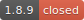
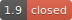
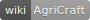

Contact 
I have a Slack channel where you can contact me for support/suggestions which you don't think fit on this issue tracker. Also if you want to discuss something with me, this is the place to be!
Supported Versions
AgriCraft has releases for Minecraft versions 1.7.10 and onwards, status per Minecraft version is as follows:
| Version | Notes |
|---|---|
| One more release to end the 1.7.10 chapter will be done, fixing all bugs from the previous version. | |
|  | The 1.8.9 branch was highly experimental and the rendering is one big hack. Don't expect anything. |
|  | Skipped 1.9, as it was an incredibly short-lived release. |
| Port in progress. |
Bug Reports
Please report any and all bugs you might encounter while playing with this mod (this only applies to versions of Minecraft this mod is currently being developed for). Suggestions are also welcome. However before reporting a bug please update to the latest version of the mod to see if it still persists. If you want to post bug reports for older versions, make sure to tell me what version you are using and the version of Forge you are using. If you report a bug and I request more feedback, the label 'Awaiting reply' will be added, if I have had no response for 5 days after adding that label, the issue will be closed.
Technical Documentation 
AgriCraft is documented in the official GitHub wiki. Note that this kind of information is, most of the time, only needed by pack creators and not the average user.